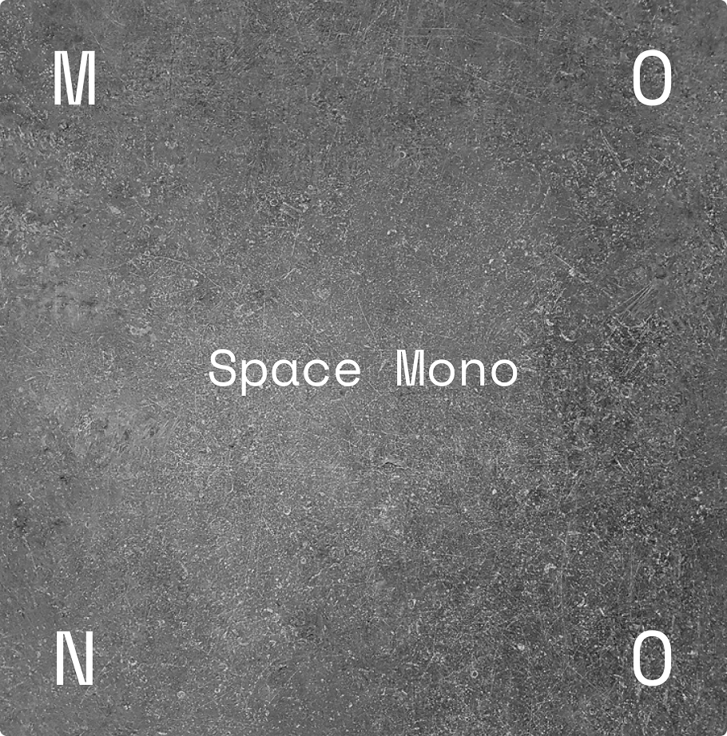
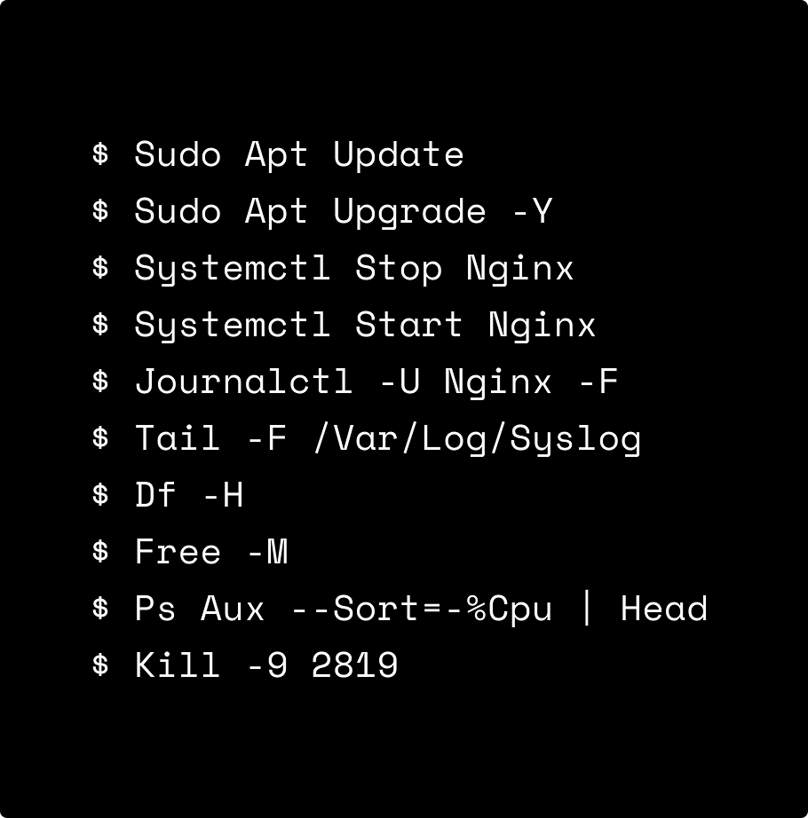
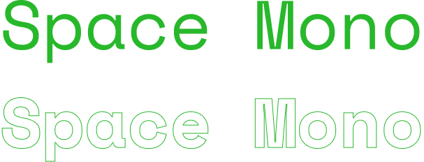

Space Mono
ls, cd, pwd, mkdir, rm, mv, cp, touch, cat, grep, find, sort, head, tail, wc, uname, top, df, free, ps, uptime, ping, curl, wget, ifconfig, netstat, dig, chmod, chown, bash...



제가 VS Code에서 사용하고 있는 모노스페이스 서체입니다.
모노스페이스 서체는 보통 답답하고 옛날? 느낌이 강한데,
Space Mono는 균일하고 동글동글한 느낌이라서 좋아하는 서체에요.
코딩이나 데이터 작업용으로도 좋지만, 디자인에도 포인트로 활용하기 괜찮다고 생각합니다.
균일한 글자 너비로 글자가 정렬되어 보이고, 기계적인 느낌을 주는 디자인도 할 수 있어요.